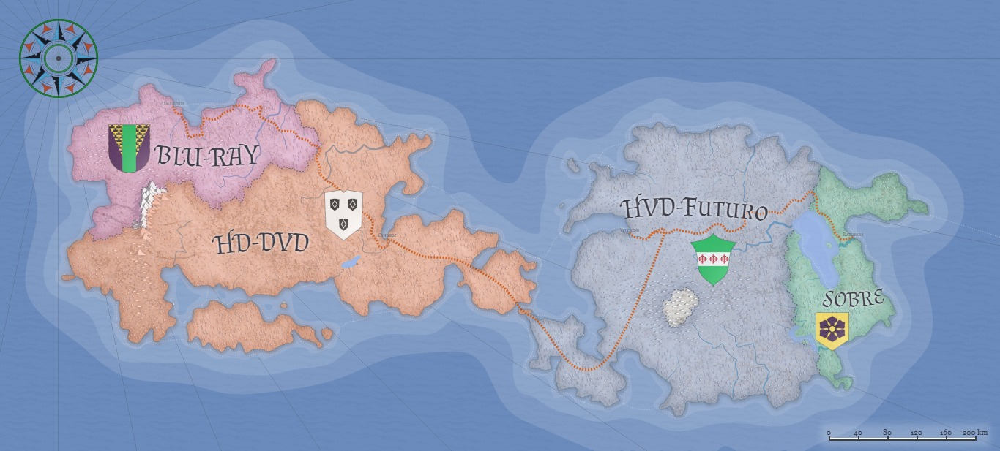

 
      <!-- Create Mappings -->
      <map name = "html">
         <area shape = "rect" coords = "154,150,59,60" href = "about/about_team.htm"
         alt = "Team" target = "_self" />
      </map>